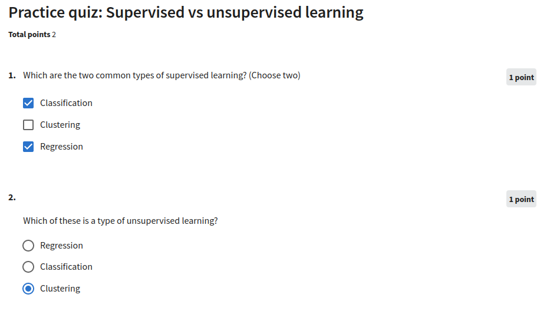

Supervised_Machine_Learning
(Regression_and_Classification)
Weak-1
Practice Quiz - 1
Practice Quiz - 2

Practice Quiz - 3

Optional Lab - 1: Brief Introduction to Python and Jupyter Notebooks
Welcome to the first optional lab! Optional labs are available to: - provide information - like this notebook - reinforce lecture material with hands-on examples - provide working examples of routines used in the graded labs
Goals
In this lab, you will: - Get a brief introduction to Jupyter notebooks - Take a tour of Jupyter notebooks - Learn the difference between markdown cells and code cells - Practice some basic python
The easiest way to become familiar with Jupyter notebooks is to take the tour available above in the Help menu:

Jupyter notebooks have two types of cells that are used in this course. Cells such as this which contain documentation called Markdown Cells. The name is derived from the simple formatting language used in the cells. You will not be required to produce markdown cells. Its useful to understand the cell pulldown shown in graphic below. Occasionally, a cell will end up in the wrong mode and you may need to restore it to the right state:

The other type of cell is the code cell where you will write your code:
[1]:
#This is a 'Code' Cell
print("This is code cell")
This is code cell
Python
You can write your code in the code cells. To run the code, select the cell and either - hold the shift-key down and hit ‘enter’ or ‘return’ - click the ‘run’ arrow above

Print statement
[2]:
# print statements
variable = "right in the strings!"
print(f"f strings allow you to embed variables {variable}")
f strings allow you to embed variables right in the strings!
[ ]: